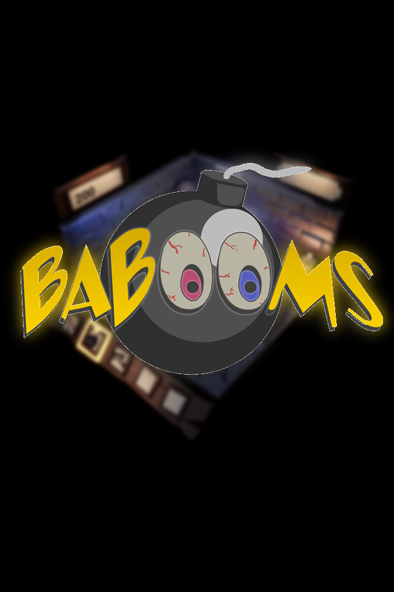

About
 I'm a game developer working on large scale projects. I fit well in teams, I've been a programmer in several different roles over the last few years, getting more experienced with a lot of subjects.
I love prototyping, which has allowed me to get more experience with a variety of different subjects, such as developing for VR, networking, inverse kinematics, writing math libraries.
I'm a game developer working on large scale projects. I fit well in teams, I've been a programmer in several different roles over the last few years, getting more experienced with a lot of subjects.
I love prototyping, which has allowed me to get more experience with a variety of different subjects, such as developing for VR, networking, inverse kinematics, writing math libraries.
In short, I excel at creating features realiably and quickly, preferably in collaboration with a large team of designers and artists. Here are some of my preferred tools:
Unreal Engine 4
4 Years

C++11/14/17
3 Years

GitHub
2 Years

Perforce
3 Years

Godot
1 Year

Projects
Below are a few of the projects that I have worked on over the last few years, click on any of them to see my role and more details.
I'm best at working in Unreal Engine 4 or Godot for developing games. Then again, I'm a quick study and have worked in large codebases and custom engines,
so picking up a new/different engine shouldn't take me too long.
Bioside
(UE4 VR Shooter)

Tiframe
(C++ Game Engine)

BaBooms
(UE4 Multiplayer)

Skills & Education
Education: Breda University of Applied Sciences International Game Architecture and Design (Website)
- Batchelor Creative Media and Game Technologies (expected 2016-2020)
- Master Game Technology (expected 2020-2021)
We have a strong focus on creating games in a professional environment. Besides game engines and programming languages, I'm also proficient at iterative
development using Scrum and Kanban, and the tools that come with those, such as Trello and Jira.
|
I know 6 scripting languages (in order of skill):
- C++ (3 Years)
- Blueprinting (4 Years)
- Godot Script (1 Year)
- C# (0.5 Years)
- Javascript (1 Year)
- HTML/CSS (1 Year)
|
Subjects I have experience with:
- Vector and matrix math libraries
- Graphics (OpenGL)
- Engine development
- Networking and Replication
- Inverse Kinematics
- Creating Modular Systems
- 3D modeling, texturing, rigging and animating
- Basic material and shader creation
- Basic production
|
I speak 4 languages:
- English (Proficient, CPE)
- Dutch (Proficient, Native)
- German (Basic, high school)
- French (Basic, high school)
|